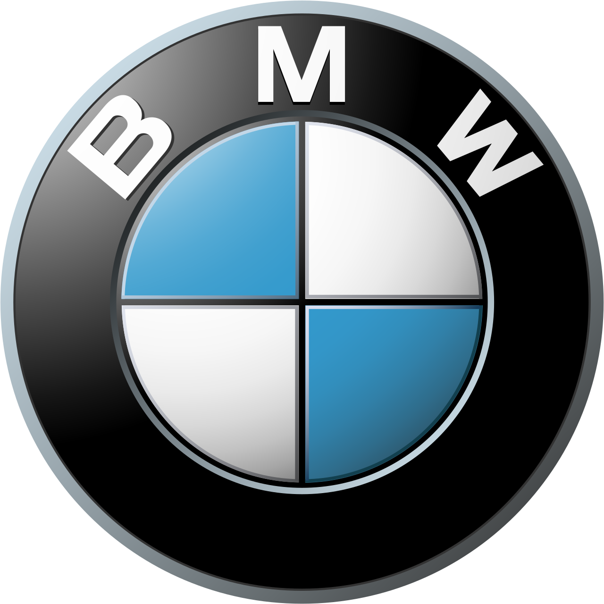

BMW Security
beveiliging

Portieren en achterklep
Tik om te testenDemonstratie: bij het openen klinkt (indien ingeschakeld) een korte waarschuwing. De rode onderdelen in het interactieve bovenaanzicht bewegen mee met de knoppen. De grote 3D-foto blijft voorlopig een vaste illustratie. Nog geen live CarData-koppeling of echt alarm.
Rijgegevens
Later kunnen we hier kilometerstand, actieradius en ritgegevens tonen, voor zover beschikbaar via BMW CarData.
Laden
Voorbereid op laadstatus, accuniveau en elektrische actieradius, afhankelijk van de beschikbare CarData-signalen.
Onderhoud
Ruimte voor onderhoudsgegevens en herinneringen. Nog geen echte voertuiggegevens.
BinnenkortInstellingen
Deze versie is een veilige demonstratie zonder verbinding met je BMW. Je bestaande BMW Security v7 blijft ongewijzigd.
Voor live gebruik maken we later een aparte beveiligde gegevenskoppeling. Plaats nooit BMW-tokens in deze openbare GitHub Pages-app.
Het geluid werkt wanneer deze web-app actief is. Voor meldingen op een vergrendelde iPhone blijft ntfy nodig.